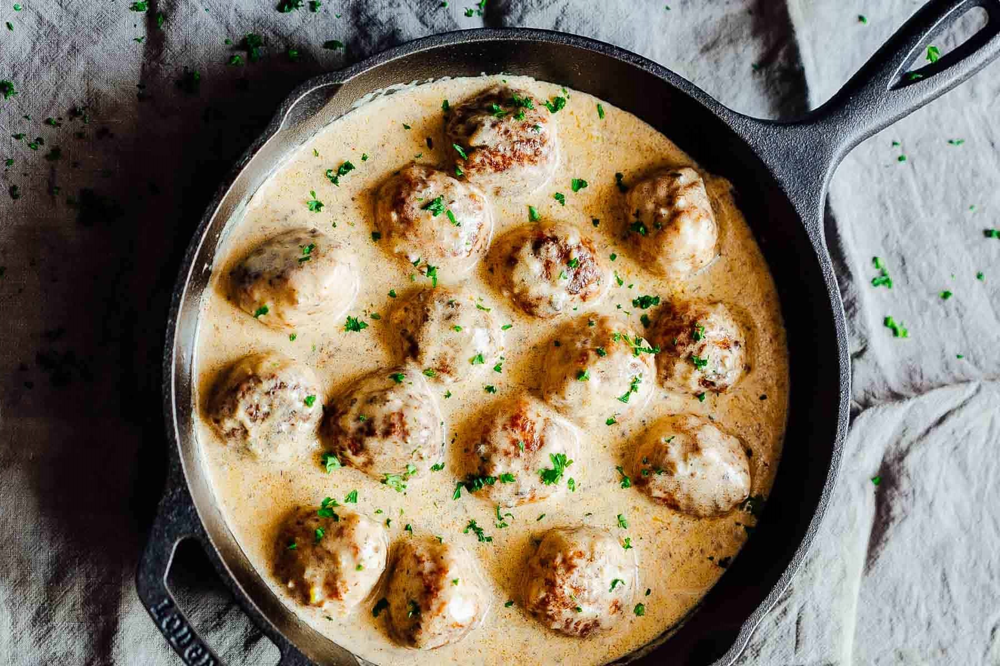

"Whether you need the perfect recipe for steak, chicken, or a slow cooked stew, we have meaty recipes for every occasion".
Bacon
Whether you prefer streaky or smoked, go beyond the breakfast plate with this budget-friendly ingredient.
Sausage sandwich with pesto
Take the sausage sandwich to another level with Italian ingredients like mozzarella and pesto. Hearty and flavourful, it's a great choice when hunger strikes
Beef
Succulent roast topside of beef, made especially irresistible with a mustard crust, piquant shallots and red wine enriched gravy
Chicken madras
Ditch the takeaway menu and cook our healthy chicken madras curry instead. This simple family dinner is full of fragrant spices and tender pieces of chicken.
Twice-cooked sticky duck
This recipe for tender, juicy duck with a honey glaze is staggered and takes out all the stress of doing it on the day.
Spiced Christmas gammon with membrillo glaze
Give festive ham a Spanish twist with a sticky quince and orange glaze. Allspice, cloves and cinnamon add real warmth
One-pan fragrant duck & vegetable curry
Try something different for dinner with our flavourful one-pan curry. The lovely richness of the duck is balanced by the veg.
Lamb koftas
With only five ingredients, these lean meatballs couldn't be any easier to make.

Meatballs with creamy mushrooms & mash
Serve up this crowd-pleasing meal of meatballs in a creamy mushroom and thyme sauce. Enjoy with green veg and mash for a delicious family dinner.
Next level spaghetti Bolognese
Ramp up your usual spaghetti Bolognese with this recipe which throws in a few unorthodox methods and ingredients to deliver the ultimate pasta dish.
Hob-to-table moussaka
Try this rich, hearty and quick variation on the classic family favourite.
Rich ragu
A rich, versatile meat sauce: serve it Bolognese-style with spaghetti or use it as a base for lasagne or moussaka.
Lasagne
Little is more satisfying than cooking a classic to perfection – Sarah Cook gives us a lesson in how to make lasagne.
Creamy Swedish meatballs
Love meatballs but worry about the fat content? This low-fat version will be a real treat.
Vietnamese-style beef salad
Lighten up beef mince in this Asian inspired noodle salad with crunchy carrots, beansprouts, and crushed peanuts
Rib-eye steak with red wine & pastrami sauce
Steak and chips is an unbeatable main course. Try this juicy rib-eye for two with our tangy gherkin ketchup and red wine and pastrami sauce.
.png)